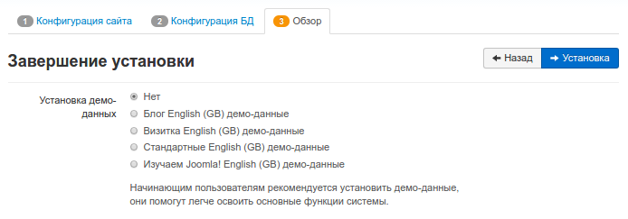

БД
/var/www/html#
192.168.1.42/joomla
juser
alensav
m.u.[......a.]
Установка Joomla 3 на Ubuntu 16.04
Руководство по установке CMS Joomla 3 на виртуальный сервер под управлением операционной системы Ubuntu 16.04.
Что это такое?
Joomla - бесплатная система управления контентом, в которой в качестве скриптового языка используется PHP и базы данных, например MySQL или PostgreSQL. CMS проста в установке, предлагает широкий спектр функций, которые делают ее невероятно гибкой, но для управления большим проектом вряд-ли подойдет. В настоящее время находится на втором месте в рейтинге систем по управлению контентом. Существует более 10 000 дополнений и новых функций, чтобы настроить ее функциональность:
Вы так же можете ознакомиться с преимуществами и процессом установки другой системы - Drupal.
Первоначальные требования
Все действия в данной инструкции выполняются с правами суперпользователя.
Перед тем, как начать работать с Joomla на VPS необходимо установить LAMP-стек, неотъемлемую часть работы CMS. Настройка развернуто описана в нашей инструкции.
После того, как у вас есть необходимые права и нужное ПО, вы можете начать установку Joomla!
Загрузка Joomla
Первоначально сформируйте каталог в домашней директории, в котором вы будете временно хранить файлы Joomla:
cd ~
mkdir tempjo
Перейдите в созданный каталог:
cd ~/tempjo
Затем вы можете загрузить актуальную версию Joomla прямо с официального сайта:
wget https://downloads.joomla.org/cms/joomla3/3-7-2/Joomla_3-7.2-Stable-Full_Package.tar.gz
Примечание: посмотреть последние версии Joomla можно по ссылке.
В результате сжатый пакет Joomla появится прямо в созданном каталоге вашего пользователя на виртуальном сервере. Вы можете разархивировать его следующей командой, перемещая ее прямо в нужный каталог apache по умолчанию:
cd /var/www
mkdir html html/joomla
sudo tar zxvf ~/tempjo/Joomla_3-7.2-Stable-Full_Package.tar.gz -C /var/www/html/joomla
После этого временную папку можно удалить:
rm -Rf ~/tempjo
Настройка параметров
Когда файлы Joomla появятся в веб-каталоге, предоставте доступ к установщику Joomla:
chown -R www-data.www-data /var/www/html/joomla/
chmod -R 755 /var/www/html/joomla/
Настройка Базы данных
Примечание: подробнее о настройке СУБД на Linux можно ознакомиться в этой статье.
Сформируем новую БД для Joomla, для этого зайдите в MySQL-оболочку:
mysql -u root -p
Войдите в СУБД, используя пароль суперпользователя MySQL. Затем следует создать базу данных, нового пользователя в этой базе данных и предоставить ему привилегии.
Создаем БД:
CREATE DATABASE joomla;
Создаем нового пользователя:
CREATE USER juser;
Устанавливаем пароль, указав вместо <пароль> ваш пароль:
SET PASSWORD FOR juser= PASSWORD(
"<пароль>");
Завершите настройку, предоставив все привилегии новому пользователю. Без этой команды установщик Joomla не сможет использовать нового пользователя mysql для создания, редактирования и изменения необходимых таблиц:
GRANT ALL PRIVILEGES ON joomla.* TO juser IDENTIFIED BY
'<пароль>';
Затем актуализируйте MySQL:
FLUSH PRIVILEGES;
Выйдите из оболочки MySQL:
exit
Настройка Apache
Чтобы перейти к настройке CS-Cart в браузере необходимо отредактировать файл конфигурации apache:
vi /etc/apache2/apache2.conf
В конец добавьте следующие строки, заменив {ip-адрес} на ip-адрес вашего сервера:
Listen 80
<VirtualHost {ip-адрес}>
DocumentRoot /var/www/
ServerName {ip-адрес}
ErrorLog /var/log/apache2/error_{ip-адрес}
CustomLog /var/log/apache2/access_log_{ip-адрес} combined
</VirtualHost>
Настройка FireWall
Настройка FireWall для возможности удаленного доступа (проброс порта http):
iptables -A INPUT -p tcp --dport 80 -j ACCEPT
iptables-save
Примечание: после перезапуска сервера порт опять необходимо открыть.
Доступ к установщику Joomla
После того, как вы разместили файлы Joomla в нужном каталоге на VPS, назначили надлежащие разрешения и настроили БД и имя пользователя, вы можете перейти в CMS в своем браузере.
Посетите ваш домен или IP-адрес, чтобы просмотреть новую страницу Joomla:
ip-адрес/joomla
Например:
Выберете язык.
Введите данные о вашем сайте и администраторе, который будет управлять созданием новых пользователей, доступом к данным. Советуем создать максимально надежный логин пароль во избежание взлома вашего сайта. По желанию включите или выключите видимость вашего сайта для клиентов.
На следующем шаге введите созданного MySQL-user, пароль и имя базы. Тип базы данных оставьте предложенный. По желанию можете самостоятельно указать префикс таблиц. Нажмите Далее.
По желанию можно установить необходимые демо-данные. Нажмите Установка, после чего joomla будет установлена на ваш сервер.

Для повышения безопасности перед использованием удалите директорию установки.
Установка закончена.
По завершению процесса перед вами появится панель управления сайтом.
При переходе на сайт или ip-адрес для входа в CMS используйте созданные на первом шаге логин и пароль. Чтобы перейти в панель администрирования в браузере перейдите по ссылке:
<домен_или_IP-адрес>/joomla/administrator/
sudo
1. дважды проверьте мою директорию на сайте joomla, нет файла .htaccess
2. выключить SEF в файле configuration.php
3. теперь все работает нормально.
Конфигурация PHP
/var/www/html/joomla/configuration.php
https://github.com/joomla/joomla-cms/releases.